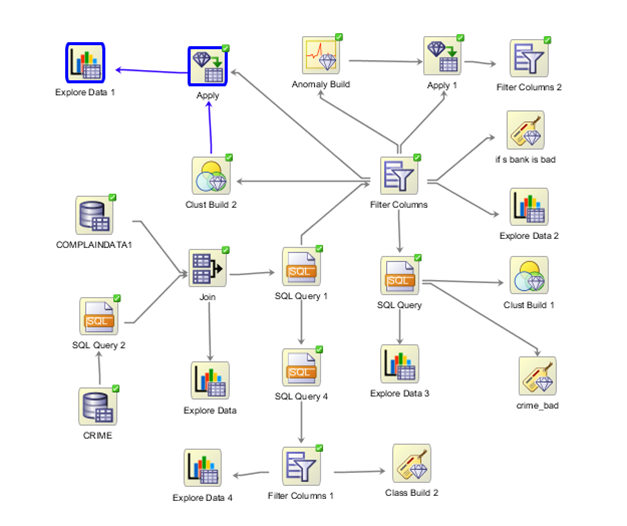
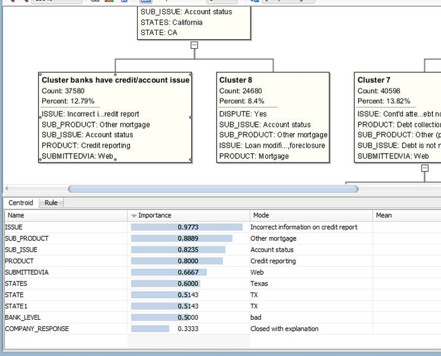
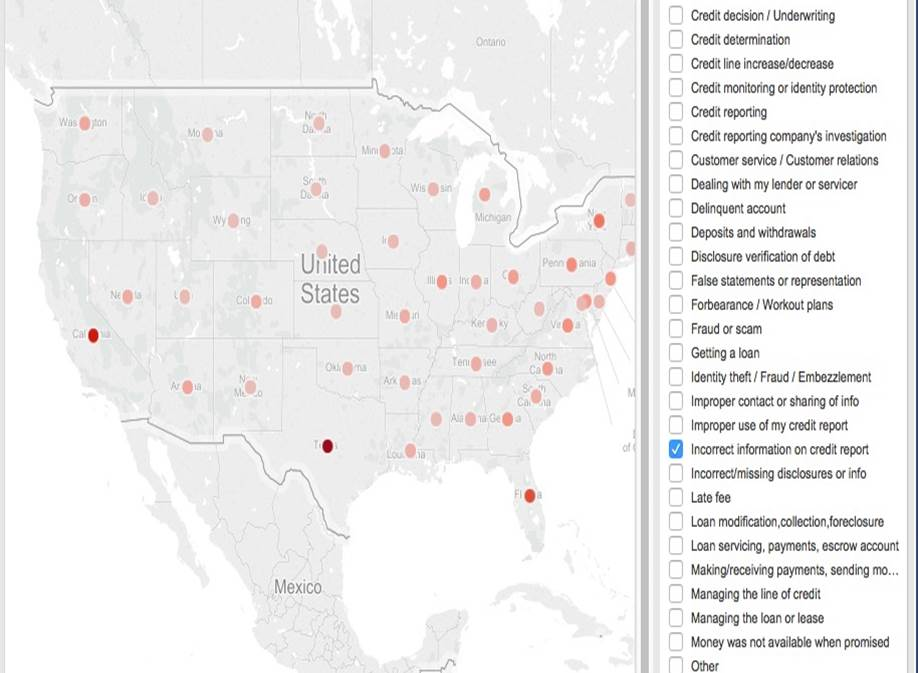
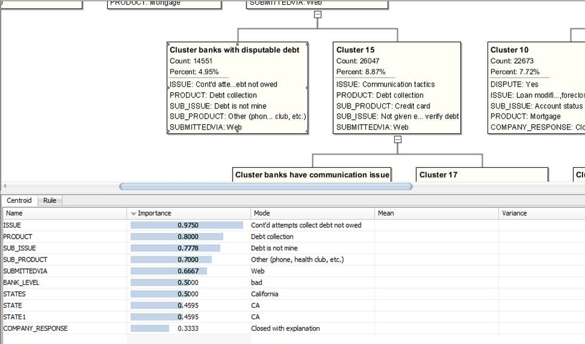
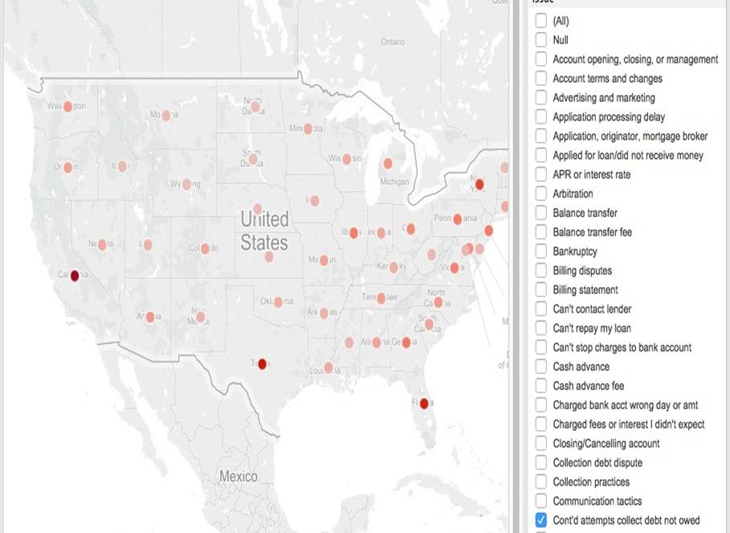
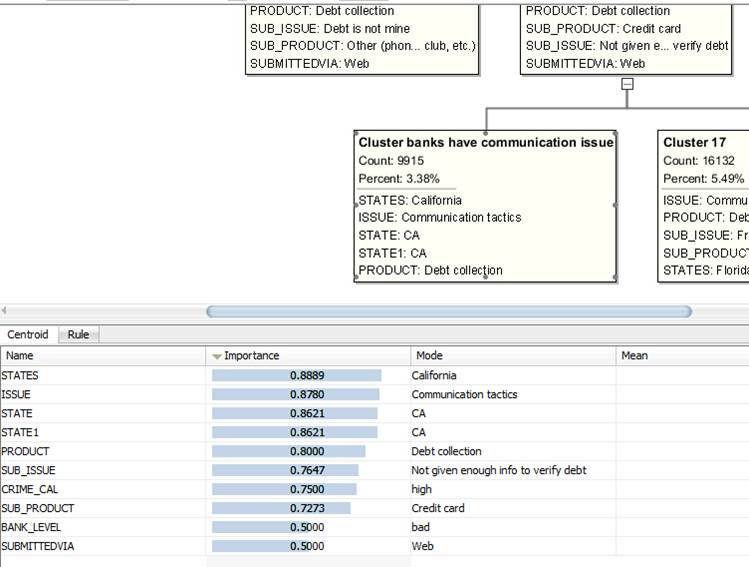
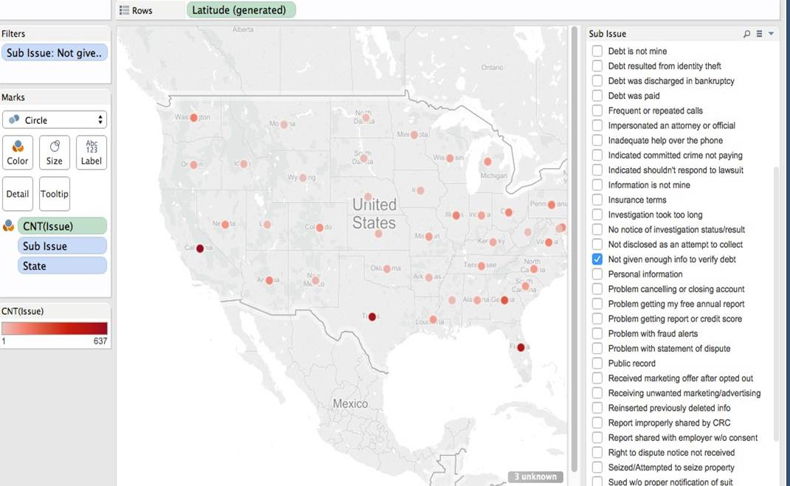
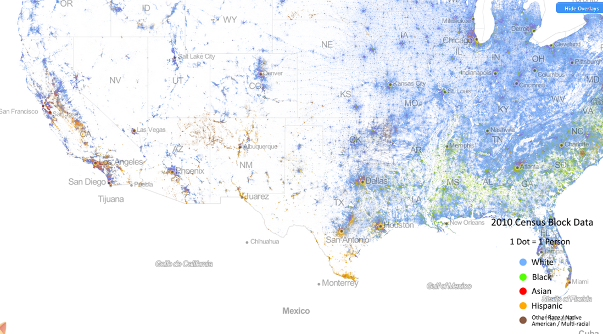
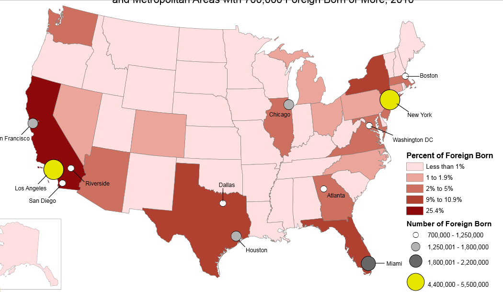

##Datasets
##Findings
###First Try
At first we were trying to find the relationship between bad bank (we define bank that doesn’t not respond timely, has disputation and sub-issues as bad bank) and crime rate.
What we want to prove is: bad bank usually located in high crime rate places
It turns out we were wrong after using the crime rate on zip code level
###Second Try
After the failure of the first try, we decide to change our dataset, then we chose the Financial Consumer Complaint dataset.
Overview of the workflow 
We used cluster on Financial consumer complaint dataset What we found:
Cluster:

Tableau we used filter on "Issue" column and select only "Incorrect information on credit report" 
Cluster:

Tableau we used filter on "Issue" column and select only "Con't attempts collect debt not owed" 
Cluster:

Tableau we used filter on "Sub issue" column and select only "Not given enough info to verify debt" 
##Asumption
###Why CA has highest number of communication problems?
We think language could be the problem, like people whose first language is not English, they may have problem communicate with others in English.
###Verify Using Tableau
We used race data in census dataset and found out CA has the largest diversity and has relatively large amount of people whose first language is not English.
People tend to use their first language to communicate with their own race.
Shelves Rows: states Column: sum of the population from Census of 2010
Marks The mark type is Bar
Labels The bars are labeled by races in different colors
###Verify using online sources
We find some online sources about the race distribution in US


###Another thought
We later thought migration population may have bigger communication problem than races. We searched some onlie source:
